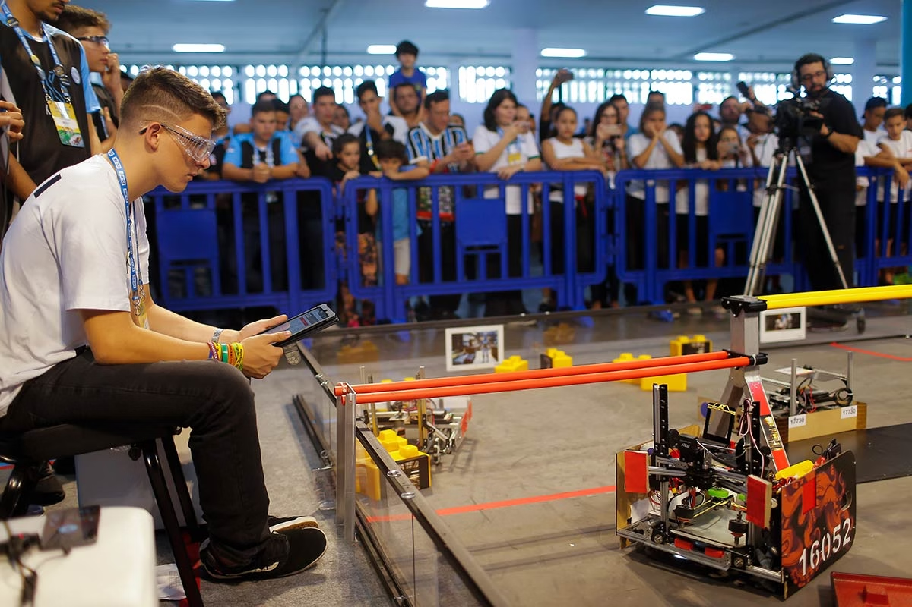
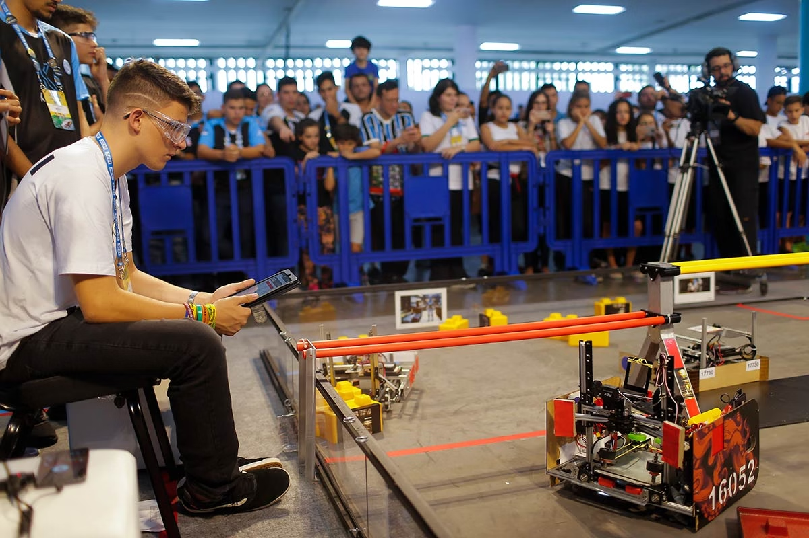

IFSul realiza projeto de extensão sobre Robótica Educacional
 

Santana do Livramento – O Instituto Federal Sul-rio-grandense (IFSul), por meio do curso Técnico em Informática, promoveu durante o mês de maio uma série de oficinas de Robótica Educacional voltadas para alunos da rede pública de ensino do município.
O projeto de extensão, intitulado "Robótica para Todos", teve como principal objetivo despertar o interesse dos jovens pelas áreas de Ciência, Tecnologia, Engenharia e Matemática (STEM), além de desenvolver habilidades como trabalho em equipe, resolução de problemas e pensamento lógico.
Durante as atividades, os participantes aprenderam conceitos básicos de eletrônica, lógica de programação e montagem de pequenos robôs utilizando kits educacionais como Arduino e Lego Mindstorms. As oficinas foram ministradas por estudantes do IFSul, sob orientação dos professores da área de Informática.
Segundo a professora Mariana Costa, coordenadora do projeto, a iniciativa vai muito além de ensinar tecnologia: "Queremos mostrar aos jovens que eles são capazes de criar soluções reais para problemas do dia a dia utilizando a robótica como ferramenta de transformação social".
Ao final do ciclo de oficinas, os alunos desenvolveram protótipos de robôs seguidores de linha, braços robóticos e pequenos dispositivos automatizados, que foram apresentados em uma Mostra de Projetos aberta à comunidade e às famílias dos estudantes.
Além do aprendizado técnico, a ação também buscou promover o protagonismo estudantil, a inclusão digital e o fortalecimento da relação entre o IFSul e as escolas do entorno.
O projeto "Robótica para Todos" é financiado com recursos do Programa de Extensão Institucional (PROEXT) e deve ter novas edições nos próximos semestres, atendendo um número ainda maior de escolas e alunos.
Reportagem: Núcleo de Comunicação Social - IFSul Campus Santana